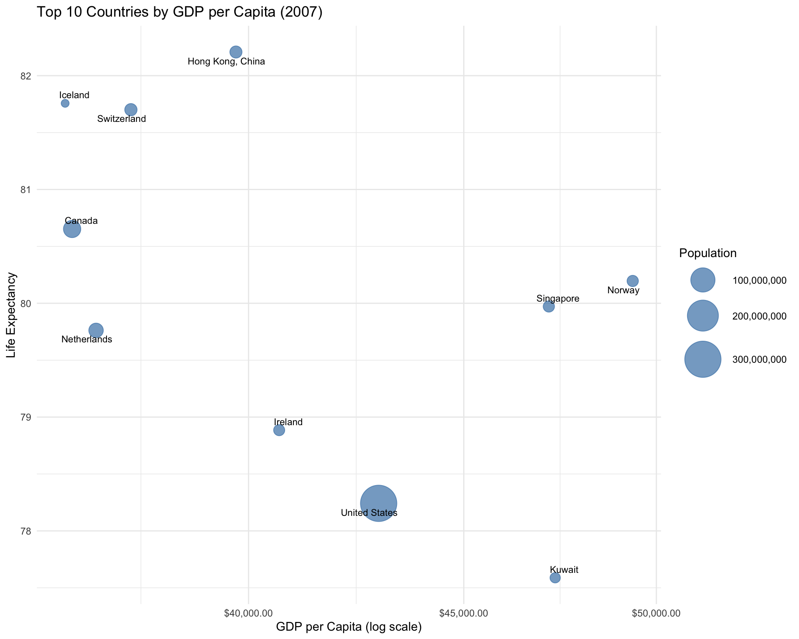

library(tidyverse)
library(palmerpenguins)
library(gapminder)
library(patchwork) # For combining plots
library(scales) # For scale formatting
library(viridis) # For color palettes
library(ggrepel) # For better text labels
library(GGally) # For pair plots
# Set a default theme
theme_set(theme_minimal())Chapter 5: Data Visualization with ggplot2
Learning Objectives
By the end of this chapter, you will master:
- The grammar of graphics philosophy
- Creating basic plots: scatter, line, bar, histogram
- Customizing aesthetics, scales, and themes
- Creating complex multi-panel visualizations
- Statistical layers and transformations
- Interactive visualizations
- Publication-ready graphics
Download R Script
You can download the complete R code for this chapter: 📥 Download 05-visualization.R
Setup
The Grammar of Graphics
ggplot2 builds plots layer by layer:
- Data: The dataset
- Aesthetics (aes): How variables map to visual properties
- Geometries (geom): The type of plot
- Facets: Subplots
- Statistics: Statistical transformations
- Coordinates: Coordinate systems
- Themes: Overall visual appearance
Basic Plots
Scatter Plots
# Basic scatter plot
ggplot(penguins, aes(x = flipper_length_mm, y = body_mass_g)) +
geom_point()
# Enhanced scatter plot
ggplot(penguins, aes(x = flipper_length_mm, y = body_mass_g)) +
geom_point(aes(color = species, shape = species), size = 3, alpha = 0.7) +
scale_color_brewer(palette = "Set2") +
labs(
title = "Penguin Body Mass vs Flipper Length",
subtitle = "Data from Palmer Station, Antarctica",
x = "Flipper Length (mm)",
y = "Body Mass (g)",
color = "Species",
shape = "Species",
caption = "Source: palmerpenguins package"
) +
theme_minimal()
# Adding trend lines
ggplot(penguins, aes(x = flipper_length_mm, y = body_mass_g, color = species)) +
geom_point(size = 2, alpha = 0.6) +
geom_smooth(method = "lm", se = TRUE) + # Linear regression with confidence interval
scale_color_viridis_d() +
facet_wrap(~island) + # Separate panels by island
labs(
title = "Penguin Morphology by Island",
x = "Flipper Length (mm)",
y = "Body Mass (g)"
)
Bar Plots
# Count bar plot
ggplot(penguins, aes(x = species)) +
geom_bar(fill = "steelblue") +
labs(title = "Penguin Count by Species")
# Grouped bar plot
penguins %>%
count(species, island) %>%
ggplot(aes(x = species, y = n, fill = island)) +
geom_col(position = "dodge") +
scale_fill_brewer(palette = "Set3") +
labs(
title = "Penguin Distribution Across Islands",
x = "Species",
y = "Count",
fill = "Island"
) +
theme(legend.position = "top")# Stacked percentage bar plot
penguins %>%
count(species, sex) %>%
drop_na() %>%
group_by(species) %>%
mutate(percentage = n / sum(n) * 100) %>%
ggplot(aes(x = species, y = percentage, fill = sex)) +
geom_col() +
scale_fill_manual(values = c("female" = "#FF6B9D", "male" = "#4ECDC4")) +
labs(
title = "Sex Distribution by Species",
x = "Species",
y = "Percentage",
fill = "Sex"
) +
geom_text(aes(label = round(percentage, 1)),
position = position_stack(vjust = 0.5),
color = "white", fontface = "bold")
Histograms and Density Plots
# Basic histogram
ggplot(penguins, aes(x = body_mass_g)) +
geom_histogram(bins = 30, fill = "darkblue", alpha = 0.7) +
labs(title = "Distribution of Penguin Body Mass")
# Density plot with fill
ggplot(penguins, aes(x = body_mass_g, fill = species)) +
geom_density(alpha = 0.5) +
scale_fill_viridis_d() +
labs(
title = "Body Mass Distribution by Species",
x = "Body Mass (g)",
y = "Density"
)# Histogram with density overlay
ggplot(penguins, aes(x = flipper_length_mm)) +
geom_histogram(aes(y = after_stat(density)),
bins = 30, fill = "lightblue", color = "black", alpha = 0.7) +
geom_density(color = "red", linewidth = 1.2) +
facet_wrap(~species, scales = "free_y") +
labs(
title = "Flipper Length Distribution by Species",
x = "Flipper Length (mm)",
y = "Density"
)
# Ridge plot (requires ggridges)
if (require(ggridges, quietly = TRUE)) {
ggplot(penguins, aes(x = body_mass_g, y = species, fill = species)) +
geom_density_ridges(alpha = 0.7, scale = 1.5) +
scale_fill_viridis_d() +
labs(
title = "Body Mass Distribution Ridge Plot",
x = "Body Mass (g)",
y = "Species"
) +
theme_minimal() +
theme(legend.position = "none")
}Box Plots and Violin Plots
# Basic box plot
ggplot(penguins, aes(x = species, y = bill_length_mm)) +
geom_boxplot(fill = "lightgreen", alpha = 0.7) +
labs(title = "Bill Length by Species")# Box plot with points
ggplot(penguins, aes(x = species, y = bill_length_mm, fill = species)) +
geom_boxplot(alpha = 0.5, outlier.shape = NA) + # Hide outliers
geom_jitter(width = 0.2, alpha = 0.3) + # Add jittered points
scale_fill_brewer(palette = "Set2") +
labs(
title = "Bill Length Distribution with Individual Points",
x = "Species",
y = "Bill Length (mm)"
) +
theme(legend.position = "none")
# Violin plot with box plot overlay
ggplot(penguins, aes(x = species, y = body_mass_g, fill = species)) +
geom_violin(alpha = 0.5) +
geom_boxplot(width = 0.2, alpha = 0.7) +
scale_fill_viridis_d() +
labs(
title = "Body Mass Distribution: Violin + Box Plot",
x = "Species",
y = "Body Mass (g)"
) +
theme(legend.position = "none")
Line Plots and Time Series
# Time series with gapminder
gapminder %>%
filter(country %in% c("United States", "China", "India", "Brazil", "Germany")) %>%
ggplot(aes(x = year, y = gdpPercap, color = country)) +
geom_line(linewidth = 1.2) +
geom_point(size = 2) +
scale_y_log10(labels = scales::dollar) +
scale_color_brewer(palette = "Set1") +
labs(
title = "GDP per Capita Over Time",
subtitle = "Selected Countries (1952-2007)",
x = "Year",
y = "GDP per Capita (log scale)",
color = "Country"
) +
theme(legend.position = "top")# Area plot
gapminder %>%
filter(continent == "Americas") %>%
group_by(year) %>%
summarise(total_pop = sum(pop) / 1e9) %>%
ggplot(aes(x = year, y = total_pop)) +
geom_area(fill = "steelblue", alpha = 0.7) +
geom_line(color = "darkblue", linewidth = 1) +
labs(
title = "Total Population of the Americas",
x = "Year",
y = "Population (billions)"
)
# Multiple lines with confidence intervals
penguins %>%
drop_na() %>%
group_by(species, year) %>%
summarise(
mean_mass = mean(body_mass_g),
se_mass = sd(body_mass_g) / sqrt(n()),
.groups = "drop"
) %>%
ggplot(aes(x = year, y = mean_mass, color = species)) +
geom_ribbon(aes(ymin = mean_mass - se_mass,
ymax = mean_mass + se_mass,
fill = species), alpha = 0.2) +
geom_line(linewidth = 1.2) +
geom_point(size = 3) +
scale_color_viridis_d() +
scale_fill_viridis_d() +
labs(
title = "Average Penguin Body Mass by Year",
subtitle = "With standard error bands",
x = "Year",
y = "Mean Body Mass (g)"
)Advanced Aesthetics and Scales
# Custom color scales
p1 <- ggplot(penguins, aes(x = bill_length_mm, y = bill_depth_mm, color = body_mass_g)) +
geom_point(size = 3) +
scale_color_gradient(low = "blue", high = "red") +
labs(title = "Gradient Color Scale")
p2 <- ggplot(penguins, aes(x = bill_length_mm, y = bill_depth_mm, color = body_mass_g)) +
geom_point(size = 3) +
scale_color_viridis_c(option = "plasma") +
labs(title = "Viridis Color Scale")
p3 <- ggplot(penguins, aes(x = bill_length_mm, y = bill_depth_mm, color = species)) +
geom_point(size = 3) +
scale_color_manual(values = c("#E69F00", "#56B4E9", "#009E73")) +
labs(title = "Manual Color Scale")
p4 <- ggplot(penguins, aes(x = bill_length_mm, y = bill_depth_mm, size = body_mass_g)) +
geom_point(alpha = 0.5, color = "darkblue") +
scale_size_continuous(range = c(1, 10)) +
labs(title = "Size Scale")
# Combine plots with patchwork
(p1 + p2) / (p3 + p4) +
plot_annotation(title = "Different Scale Examples")Statistical Layers
# Smoothing methods
p1 <- ggplot(penguins, aes(x = bill_length_mm, y = bill_depth_mm)) +
geom_point(alpha = 0.5) +
geom_smooth(method = "lm", color = "red") +
labs(title = "Linear Regression")
p2 <- ggplot(penguins, aes(x = bill_length_mm, y = bill_depth_mm)) +
geom_point(alpha = 0.5) +
geom_smooth(method = "loess", color = "blue") +
labs(title = "LOESS Smoothing")
# 2D density
p3 <- ggplot(penguins, aes(x = bill_length_mm, y = bill_depth_mm)) +
geom_density_2d_filled() +
geom_point(alpha = 0.3) +
labs(title = "2D Density Contours")
# Hexbin plot
p4 <- ggplot(penguins, aes(x = bill_length_mm, y = bill_depth_mm)) +
geom_hex(bins = 20) +
scale_fill_viridis_c() +
labs(title = "Hexagonal Binning")
(p1 + p2) / (p3 + p4)
Faceting
# Facet wrap
ggplot(penguins, aes(x = bill_length_mm, y = bill_depth_mm, color = species)) +
geom_point() +
facet_wrap(~year, ncol = 2) +
scale_color_viridis_d() +
labs(title = "Penguin Bills by Year")
# Facet grid
ggplot(penguins, aes(x = bill_length_mm, y = bill_depth_mm)) +
geom_point(aes(color = sex)) +
geom_smooth(method = "lm", se = FALSE) +
facet_grid(species ~ island) +
labs(title = "Penguin Bills: Species by Island Grid") +
theme(strip.text = element_text(face = "bold"))# Free scales
penguins %>%
pivot_longer(cols = contains("mm"), names_to = "measurement", values_to = "value") %>%
ggplot(aes(x = value, fill = species)) +
geom_histogram(bins = 30, alpha = 0.7) +
facet_wrap(~measurement, scales = "free", ncol = 2) +
scale_fill_viridis_d() +
labs(
title = "Distribution of Penguin Measurements",
x = "Value (mm)",
y = "Count"
)Annotations and Labels
# Text annotations
avg_by_species <- penguins %>%
group_by(species) %>%
summarise(
avg_bill_length = mean(bill_length_mm, na.rm = TRUE),
avg_bill_depth = mean(bill_depth_mm, na.rm = TRUE)
)
ggplot(penguins, aes(x = bill_length_mm, y = bill_depth_mm, color = species)) +
geom_point(alpha = 0.5) +
geom_point(data = avg_by_species,
aes(x = avg_bill_length, y = avg_bill_depth),
size = 5, shape = 18) +
geom_text(data = avg_by_species,
aes(x = avg_bill_length, y = avg_bill_depth, label = species),
vjust = -1.5, fontface = "bold") +
annotate("text", x = 55, y = 21,
label = "Diamonds show\nspecies averages",
size = 4, fontface = "italic") +
annotate("segment", x = 53, y = 20.5, xend = 51, yend = 19,
arrow = arrow(length = unit(0.3, "cm"))) +
scale_color_viridis_d() +
labs(
title = "Penguin Bill Dimensions with Species Averages",
x = "Bill Length (mm)",
y = "Bill Depth (mm)"
) +
theme(legend.position = "none")
# Using ggrepel for better label placement
if (require(ggrepel, quietly = TRUE)) {
top_countries <- gapminder %>%
filter(year == 2007) %>%
arrange(desc(gdpPercap)) %>%
head(10)
ggplot(top_countries, aes(x = gdpPercap, y = lifeExp)) +
geom_point(aes(size = pop), alpha = 0.7, color = "steelblue") +
geom_text_repel(aes(label = country), size = 3) +
scale_x_log10(labels = scales::dollar) +
scale_size_continuous(range = c(3, 15), labels = scales::comma) +
labs(
title = "Top 10 Countries by GDP per Capita (2007)",
x = "GDP per Capita (log scale)",
y = "Life Expectancy",
size = "Population"
)
}
Custom Themes
# Create a custom theme
theme_workshop <- function() {
theme_minimal() +
theme(
plot.title = element_text(size = 16, face = "bold", hjust = 0.5),
plot.subtitle = element_text(size = 12, hjust = 0.5, face = "italic"),
axis.title = element_text(size = 12, face = "bold"),
axis.text = element_text(size = 10),
legend.title = element_text(size = 11, face = "bold"),
legend.position = "bottom",
panel.grid.minor = element_blank(),
panel.border = element_rect(color = "gray80", fill = NA),
plot.background = element_rect(fill = "gray98"),
strip.background = element_rect(fill = "gray90"),
strip.text = element_text(face = "bold")
)
}
# Apply custom theme
p1 <- ggplot(penguins, aes(x = species, fill = species)) +
geom_bar() +
scale_fill_brewer(palette = "Set2") +
labs(title = "theme_minimal()") +
theme_minimal()
p2 <- ggplot(penguins, aes(x = species, fill = species)) +
geom_bar() +
scale_fill_brewer(palette = "Set2") +
labs(title = "theme_classic()") +
theme_classic()
p3 <- ggplot(penguins, aes(x = species, fill = species)) +
geom_bar() +
scale_fill_brewer(palette = "Set2") +
labs(title = "theme_dark()") +
theme_dark()
p4 <- ggplot(penguins, aes(x = species, fill = species)) +
geom_bar() +
scale_fill_brewer(palette = "Set2") +
labs(title = "Custom Theme") +
theme_workshop()
(p1 + p2) / (p3 + p4)
Complex Visualizations
# Correlation heatmap
if (require(corrplot, quietly = TRUE)) {
penguins %>%
select(where(is.numeric)) %>%
drop_na() %>%
cor() %>%
corrplot(method = "color", type = "upper",
order = "hclust", tl.cex = 0.8)
}# Pair plot with GGally
if (require(GGally, quietly = TRUE)) {
penguins %>%
select(species, bill_length_mm, bill_depth_mm,
flipper_length_mm, body_mass_g) %>%
drop_na() %>%
ggpairs(
aes(color = species),
upper = list(continuous = "density", combo = "box_no_facet"),
lower = list(continuous = "points", combo = "dot_no_facet"),
diag = list(continuous = "densityDiag"),
title = "Penguin Measurements Pair Plot"
) +
scale_color_viridis_d() +
scale_fill_viridis_d()
}
# Complex composite visualization
plot_data <- gapminder %>%
filter(year == 2007) %>%
mutate(pop_millions = pop / 1e6)
main_plot <- ggplot(plot_data, aes(x = gdpPercap, y = lifeExp)) +
geom_point(aes(size = pop_millions, color = continent), alpha = 0.6) +
scale_x_log10(labels = scales::dollar) +
scale_size_continuous(range = c(1, 15),
labels = scales::comma,
name = "Population (millions)") +
scale_color_brewer(palette = "Set2") +
geom_smooth(method = "lm", se = FALSE, color = "gray30", linetype = "dashed") +
labs(
title = "Global Development in 2007",
subtitle = "Relationship between wealth, health, and population",
x = "GDP per Capita (log scale)",
y = "Life Expectancy (years)",
caption = "Source: Gapminder dataset"
) +
theme_minimal() +
theme(legend.position = "right")
# Marginal distributions
x_density <- ggplot(plot_data, aes(x = gdpPercap, fill = continent)) +
geom_density(alpha = 0.5) +
scale_x_log10() +
scale_fill_brewer(palette = "Set2") +
theme_void() +
theme(legend.position = "none")
y_density <- ggplot(plot_data, aes(y = lifeExp, fill = continent)) +
geom_density(alpha = 0.5) +
scale_fill_brewer(palette = "Set2") +
coord_flip() +
theme_void() +
theme(legend.position = "none")
# Combine with patchwork
x_density / main_plot / plot_spacer() +
plot_layout(heights = c(1, 4, 0.1))
Interactive Visualizations
# Using plotly for interactivity
if (require(plotly, quietly = TRUE)) {
# Create a simple interactive plot
# Note: plotly works better with simpler ggplot objects
penguins_clean <- penguins %>%
drop_na(bill_length_mm, bill_depth_mm, species)
p <- ggplot(penguins_clean, aes(x = bill_length_mm,
y = bill_depth_mm,
color = species)) +
geom_point(size = 2) +
theme_minimal() +
labs(
title = "Interactive Penguin Plot",
x = "Bill Length (mm)",
y = "Bill Depth (mm)"
)
# Try to create plotly plot, fallback to static if error
tryCatch({
ggplotly(p)
}, error = function(e) {
print("Note: Interactive plot failed, showing static version")
print(p)
})
}[1] "Note: Interactive plot failed, showing static version"
Saving Plots
# Create a publication-ready plot
final_plot <- penguins %>%
drop_na() %>%
ggplot(aes(x = flipper_length_mm, y = body_mass_g)) +
geom_point(aes(color = species, shape = island), size = 2.5, alpha = 0.7) +
geom_smooth(aes(color = species), method = "lm", se = FALSE) +
scale_color_brewer(palette = "Set1") +
scale_shape_manual(values = c(16, 17, 15)) +
labs(
title = "Palmer Penguins Morphology",
subtitle = "Relationship between flipper length and body mass",
x = "Flipper Length (mm)",
y = "Body Mass (g)",
color = "Species",
shape = "Island",
caption = "Data: Palmer Station, Antarctica"
) +
theme_minimal(base_size = 12) +
theme(
plot.title = element_text(face = "bold", hjust = 0.5),
plot.subtitle = element_text(hjust = 0.5),
legend.position = "bottom",
legend.box = "horizontal"
)
# Save in different formats
ggsave("penguin_plot.png", final_plot, width = 10, height = 8, dpi = 300)
ggsave("penguin_plot.pdf", final_plot, width = 10, height = 8)
ggsave("penguin_plot.svg", final_plot, width = 10, height = 8)
print(final_plot)Exercises
Exercise 1: Create a Complex Bar Chart
Create a bar chart showing average life expectancy by continent over time using gapminder data:
# Your solution
gapminder %>%
group_by(continent, year) %>%
summarise(avg_lifeExp = weighted.mean(lifeExp, pop), .groups = "drop") %>%
ggplot(aes(x = year, y = avg_lifeExp, fill = continent)) +
geom_col(position = "dodge") +
scale_fill_brewer(palette = "Set2") +
labs(
title = "Average Life Expectancy by Continent Over Time",
subtitle = "Population-weighted averages",
x = "Year",
y = "Life Expectancy (years)",
fill = "Continent"
) +
theme_minimal() +
theme(legend.position = "top")Exercise 2: Multi-panel Visualization
Create a visualization showing the relationship between GDP and life expectancy for each continent, with trend lines:
# Your solution
gapminder %>%
filter(year == 2007) %>%
ggplot(aes(x = gdpPercap, y = lifeExp)) +
geom_point(aes(size = pop, color = continent), alpha = 0.6) +
geom_smooth(method = "lm", se = FALSE, color = "black", linetype = "dashed") +
scale_x_log10(labels = scales::dollar) +
scale_size_continuous(range = c(1, 10), guide = "none") +
facet_wrap(~continent, scales = "free") +
scale_color_brewer(palette = "Set2") +
labs(
title = "Wealth vs Health by Continent (2007)",
x = "GDP per Capita (log scale)",
y = "Life Expectancy",
color = "Continent"
) +
theme_minimal() +
theme(legend.position = "none")
Exercise 3: Custom Theme
Create your own custom theme and apply it to a visualization:
# Your solution
theme_exercise <- function() {
theme_gray() +
theme(
plot.title = element_text(size = 18, face = "bold", color = "navy", hjust = 0.5),
plot.subtitle = element_text(size = 14, face = "italic", hjust = 0.5),
axis.title = element_text(size = 12, face = "bold", color = "darkblue"),
axis.text = element_text(size = 10),
panel.background = element_rect(fill = "white"),
panel.grid.major = element_line(color = "gray90"),
panel.grid.minor = element_blank(),
legend.background = element_rect(fill = "gray95"),
legend.key = element_rect(fill = "white"),
strip.background = element_rect(fill = "navy"),
strip.text = element_text(color = "white", face = "bold")
)
}
penguins %>%
drop_na() %>%
ggplot(aes(x = species, y = body_mass_g, fill = sex)) +
geom_violin(alpha = 0.7) +
geom_boxplot(width = 0.2, position = position_dodge(0.9)) +
scale_fill_manual(values = c("female" = "pink", "male" = "lightblue")) +
labs(
title = "Penguin Body Mass Distribution",
subtitle = "By species and sex",
x = "Species",
y = "Body Mass (g)",
fill = "Sex"
) +
theme_exercise()Exercise 4: Advanced Composite Plot
Create a dashboard-style visualization with multiple related plots:
# Your solution
# Main scatter plot
p_main <- penguins %>%
drop_na() %>%
ggplot(aes(x = flipper_length_mm, y = body_mass_g, color = species)) +
geom_point(size = 2, alpha = 0.6) +
scale_color_viridis_d() +
labs(
title = "Penguin Morphology Dashboard",
x = "Flipper Length (mm)",
y = "Body Mass (g)"
) +
theme_minimal()
# Species distribution
p_bar <- penguins %>%
count(species) %>%
ggplot(aes(x = species, y = n, fill = species)) +
geom_col() +
scale_fill_viridis_d() +
labs(title = "Species Count", x = "", y = "Count") +
theme_minimal() +
theme(legend.position = "none")
# Bill measurements
p_bill <- penguins %>%
drop_na() %>%
ggplot(aes(x = bill_length_mm, y = bill_depth_mm, color = species)) +
geom_point(alpha = 0.6) +
scale_color_viridis_d() +
labs(
title = "Bill Measurements",
x = "Length (mm)",
y = "Depth (mm)"
) +
theme_minimal() +
theme(legend.position = "none")
# Island distribution
p_island <- penguins %>%
count(island, species) %>%
ggplot(aes(x = island, y = n, fill = species)) +
geom_col(position = "fill") +
scale_fill_viridis_d() +
labs(
title = "Species by Island",
x = "Island",
y = "Proportion"
) +
theme_minimal()
# Combine all plots
(p_main | (p_bar / p_bill)) / p_island +
plot_layout(heights = c(2, 1))Summary
You’ve mastered ggplot2 essentials:
✅ Grammar of graphics concepts
✅ Creating various plot types
✅ Customizing aesthetics and scales
✅ Using statistical layers
✅ Faceting for multi-panel plots
✅ Creating custom themes
✅ Building complex composite visualizations
What’s Next?
In Chapter 6, we’ll explore functional programming with purrr, learning to apply functions efficiently across data structures.